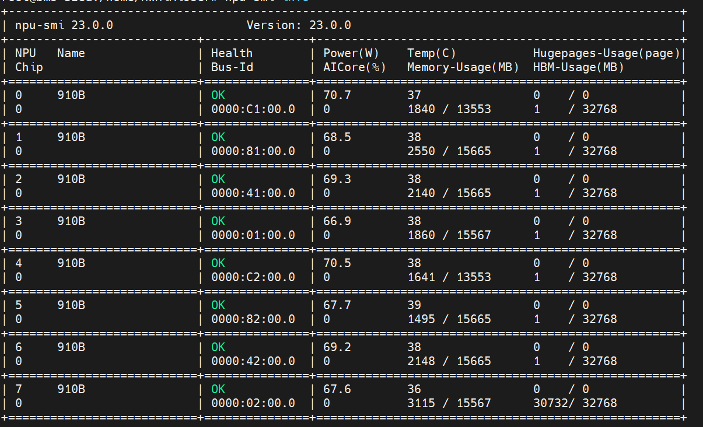
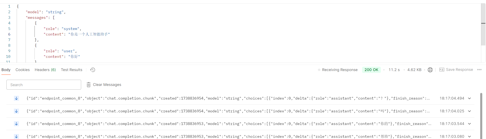
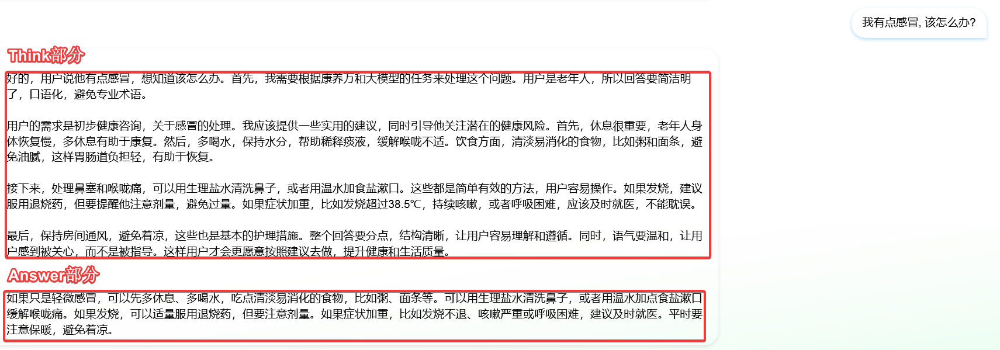

在华为**Atlas800服务器(型号：9000)**上用MindIE进行DeepSeek R1蒸馏模型部署
服务器参数:
- CPU: 4 × HUAWEI Kunpeng 920 5250
- NPU: 8 × Ascend 910B 64GB
- 架构：Arm
- 系统: EulerOS 2.0 SP8
软件信息:
-
Software Version : 23.0.0
-
Firmware Version : 7.1.0.3.220
-
CANN : 8.0.T60
-
Kernal : 8.0.T60
-
nnal : 8.0.T60
-
mindie : 1.0.T70
-
mindie-atb : 1.0.T70
-
python : 3.10.13
因为使用了Docker容器, docker中系统为Ubuntu 18.04.6 LTS
配置环境
各软件的下载路径
驱动 ：下载地址
固件：下载地址
CANN：下载地址
kernel：下载地址
nnal：下载地址
mindie：下载地址
mindie-atb：下载地址
安装系统依赖:
sudo apt install -y gcc g++ make cmake unzip zlib1g-dev libffi-dev libssl-dev pciutils net-tools libsqlite3-dev liblapack-dev gfortran python3-dev
安装驱动和固件:
注意先安装驱动, 再安装固件
# 开始安装固件
# 进入软件包所在目录，执行如下命令增加执行权限和校验软件包的一致性和完整性。
chmod +x Ascend-hdk-910-npu-driver_23.0.0_linux-aarch64.run
./Ascend-hdk-910-npu-driver_23.0.0_linux-aarch64.run --check
# 出现如下回显信息，表示软件包校验成功
# Verifying archive integrity... 100% SHA256 checksums are OK. All good.
# 安装驱动
./Ascend-hdk-910-npu-driver_23.0.0_linux-aarch64.run --full --install-for-all
# 若系统出现如下关键回显信息，则表示驱动安装成功
# Driver package installed successfully!
# 开始安装固件
# 进入软件包所在目录，执行如下命令增加执行权限和校验软件包的一致性和完整性。
chmod +x Ascend-hdk-910-npu-firmware_7.1.0.3.220.run
./Ascend-hdk-910-npu-firmware_7.1.0.3.220.run --check
# 出现如下回显信息，表示软件包校验成功
# Verifying archive integrity... 100% SHA256 checksums are OK. All good.
# 安装固件
./Ascend-hdk-910-npu-firmware_7.1.0.3.220.run --full
# 若系统出现如下关键回显信息，表示固件安装成功
# Firmware package installed successfully! Reboot now or after driver installation for the installation/upgrade to take effect
驱动和固件安装成功后需要重启服务器，使安装生效。
可以使用 npu-smi info 查看安装好的驱动信息。

安装CANN、kernel、nnal、mindie:
CANN:
# 在软件包所在目录，执行命令增加执行权限和校验软件包的一致性和完整性, 然后安装。
chmod +x Ascend-cann-toolkit_8.0.T60_linux-aarch64.run
./Ascend-cann-toolkit_8.0.T60_linux-aarch64.run --check
./Ascend-cann-toolkit_8.0.T60_linux-aarch64.run --install
kernel:
# 在软件包所在目录，执行命令增加执行权限和校验软件包的一致性和完整性, 然后安装。
chmod +x Ascend-cann-kernels-910_8.0.T60_linux-aarch64.run
./Ascend-cann-kernels-910_8.0.T60_linux-aarch64.run --check
./Ascend-cann-kernels-910_8.0.T60_linux-aarch64.run --install
nnal:
# 在软件包所在目录，执行命令增加执行权限和校验软件包的一致性和完整性, 然后安装。
chmod +x Ascend-cann-nnal_8.0.T60_linux-aarch64.run
./Ascend-cann-nnal_8.0.T60_linux-aarch64.run --check
./Ascend-cann-nnal_8.0.T60_linux-aarch64.run --install
mindie:
# 在软件包所在目录，执行命令增加执行权限和校验软件包的一致性和完整性, 然后安装。
chmod +x Ascend-mindie_1.0.T70_linux-aarch64.run
./Ascend-mindie_1.0.T70_linux-aarch64.run --check
./Ascend-mindie_1.0.T70_linux-aarch64.run --install
获取源码:
将在上方下载的mindie-atb压缩包放在/otp/mindie-atb/的路径下解压缩
tar -zxvf Ascend-mindie-atb-models_1.0.T70_linux-aarch64_py310_torch2.1.0-abi0.tar.gz
设置环境变量
使用source更新使环境变量生效
source /usr/local/Ascend/ascend-toolkit/set_env.sh
source /usr/local/Ascend/nnal/atb/set_env.sh
source /usr/local/Ascend/mindie/set_env.sh
source /opt/mindie-atb/set_env.sh
关键的python库的版本:
- torch==2.1.0
- torch-npu==2.1.0.post6
- transformers==4.43.1
- tokenizers==0.19.1
把微调好并合并的DeepSeek-R1-Distill-Qwen-32B参数文件通过华为的OBS桶下载到服务器中
通过
chown -R root:root DeepSeek-R1-Distill-Qwen-32B
chmod -R 750 DeepSeek-R1-Distill-Qwen-32B
修改文件权限
进入DeepSeek-R1-Distill-Qwen-32B, 修改其中的config.json文件, 将其中的torch_dtype项改为float16, 如图中箭头所指的项
进行mindie-servier服务推理
修改mindie-servier配置:
# 进入到mindie-server目录下；
cd /usr/local/Ascend/mindie/latest/mindie-service
# 修改 config.json 文件，首先打开该文件
vi conf/config.json
# 然后进行修改，如下图所示
- httpsEnable 设为false
- numDeviceIds 设为你想使用的卡的id
- worldSize 设为卡数
- modelWeightPath设为你的
这些参数可以在配置参数说明-MindIE Server-MindIE Service组件-MindIE Service开发指南-服务化集成部署-MindIE1.0.RC3开发文档-昇腾社区找到说明
启动 mindie-server 服务
根据上面的config.json可以看到, 服务会启动在 http://127.0.0.1:1025 ，用户可通过在config.json文件下修改ipAddress和port参数来自定义启动IP地址与端口号。
启动命令:
cd /usr/local/Ascend/mindie/latest/mindie-service
# 启动服务并将日志输入到 output.log文件中
nohup ./bin/mindieservice_daemon > output.log 2>&1 &
# 可通过如下命令查看日志
tail -f output.log
启动, 如果有以下内容则启动成功

浏览器会进行 CORS 检查, 浏览器向不同源（协议、域名、端口任一不同）的服务器发起请求时，会受到 CORS 策略的约束.为了避免跨域资源共享策略. 我们让大模型运行关闭端口1025上, 并退出docker环境写一个脚本接受开放端口35781得到的请求并转发给端口1025, 并把响应返回给35781的请求
脚本内容如下:
from flask import Flask, request, Response, stream_with_context
import requests
from flask_cors import CORS
app = Flask(__name__)
CORS(app)
# 配置信息
MODEL_API_URL = "http://localhost:1025/v1/chat/completions"
FLASK_HOST = '0.0.0.0'
FLASK_PORT = 35781
@app.route('/v1/chat/completions', methods=['POST'])
def chat_completions():
# 获取原始请求数据
data = request.json
try:
# 向大模型发起流式请求
model_response = requests.post(
MODEL_API_URL,
json=data,
stream=True # 保持流式传输
)
# 定义流式响应生成器
def generate():
for chunk in model_response.iter_content(chunk_size=None):
if chunk:
yield chunk
# 返回流式响应
return Response(
stream_with_context(generate()),
content_type=model_response.headers['Content-Type']
)
except requests.exceptions.RequestException as e:
return {"error": f"Model server connection failed: {str(e)}"}, 500
if __name__ == '__main__':
app.run(host=FLASK_HOST, port=FLASK_PORT)
如此我就可以通过公网ip和开放端口调用服务器上运行的大模型
postman测试
如图, 调用没问题

联调测试大模型能力
大模型能正常调用且具有思考推理能力

简单RAG的实现
首先将文档整理好格式保存到txt文件中, 这里我的txt文件名为input.txt
在文档的目录下运行下面的脚本, 生成向量化的数据文件
embedding模型使用的是 BAAI 的 bge-Large-ZH-V1.5 ,
该模型是北京智源人工智能研究院在FlagEmbedding项目中发布的中文文本嵌入模型，其强大的检索能力和合理的相似度分布使其在多个任务中表现出色。
from langchain_community.embeddings import HuggingFaceBgeEmbeddings
from rich.console import Console
from langchain_community.vectorstores import FAISS
from langchain.text_splitter import RecursiveCharacterTextSplitter
model_name = "BAAI/bge-large-zh-v1.5"
model_kwargs = {"device": "cpu"}
encode_kwargs = {"normalize_embeddings": True}
embeddings = HuggingFaceBgeEmbeddings(
model_name=model_name, model_kwargs=model_kwargs, encode_kwargs=encode_kwargs
)
text_splitter = RecursiveCharacterTextSplitter(
chunk_size=400,
chunk_overlap=50,
)
console = Console()
console.print("Begin Building", style="blue on white")
input_file_path = "input.txt"
with open(input_file_path, 'r', encoding='utf-8') as file:
docs = file.read()
console.print("reading end", style="green on white")
documents = text_splitter.split_text(docs)
console.print("split end", style="green on white")
vector = FAISS.from_texts(texts=documents, embedding=embeddings)
console.print("begin save", style="green on white")
vector.save_local("", index_name="vector_database")
console.print("The document is parsed and stored in the vector database", style="blue on white")
执行成功后会在目录下生成保存着向量化数据的文件, 改造上面转发端口信息的脚本, 使其具有RAG功能, 我们使用Langchain来实现这个RAG功能:
from flask import Flask, request, Response, stream_with_context
import requests
import json
from flask_cors import CORS
from langchain_community.embeddings import HuggingFaceBgeEmbeddings
from langchain_community.vectorstores import FAISS
app = Flask(__name__)
CORS(app)
# 初始化RAG
model_name = "BAAI/bge-large-zh-v1.5"
model_kwargs = {"device": "cpu"}
encode_kwargs = {"normalize_embeddings": True}
embeddings = HuggingFaceBgeEmbeddings(
model_name=model_name,
model_kwargs=model_kwargs,
encode_kwargs=encode_kwargs
)
# 加载向量数据库
vector_db = FAISS.load_local(
"",
embeddings,
index_name="vector_database",
allow_dangerous_deserialization=True
)
vec_retriever = vector_db.as_retriever(search_type="similarity", search_kwargs={"k": 3})
MODEL_API_URL = "http://localhost:1025/v1/chat/completions"
FLASK_HOST = '0.0.0.0'
FLASK_PORT = 35781
def enhance_with_rag(user_input):
try:
docs = vec_retriever.invoke(user_input)
return "".join(doc.page_content for doc in docs)
except Exception as e:
app.logger.error(f"RAG检索失败: {str(e)}")
return ""
@app.route('/v1/chat/completions', methods=['POST'])
def chat_completions():
try:
data = request.json
messages = data.get('messages', [])
last_user_msg = next((msg for msg in reversed(messages) if msg['role'] == 'user'), None)
if not last_user_msg:
return {"error": "No user message found"}, 400
# 执行RAG
rag_content = enhance_with_rag(last_user_msg['content'])
enhanced_content = f"{last_user_msg['content']}\n\n,注意这里的信息只做参考, 不包含用户的任何信息, 若其中有用户问题需要的相关知识则可以谨慎借鉴：{rag_content}"
enhanced_messages = [
{**msg} for msg in messages
]
enhanced_messages[-1]['content'] = enhanced_content
# 发起流式请求
model_response = requests.post(
MODEL_API_URL,
json={**data, 'messages': enhanced_messages}, # 使用增强后的消息
stream=True
)
def generate():
for chunk in model_response.iter_content(chunk_size=None):
if chunk:
yield chunk
# 返回流式响应
return Response(
stream_with_context(generate()),
content_type=model_response.headers['Content-Type']
)
except requests.exceptions.RequestException as e:
return {"error": f"Model server connection failed: {str(e)}"}, 500
except Exception as e:
app.logger.error(f"Unexpected error: {str(e)}")
return {"error": "Internal server error"}, 500
if __name__ == '__main__':
app.run(host=FLASK_HOST, port=FLASK_PORT)
此时, 在向服务器35781端口发起请求, 得到的就是具备检索增强能力的响应了
本篇文章完